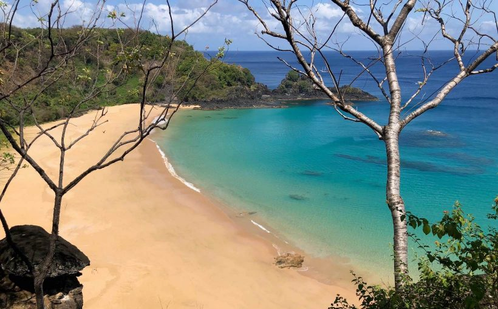
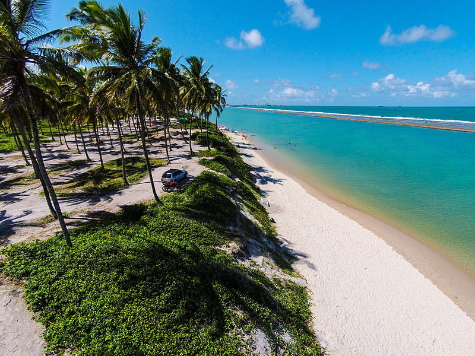
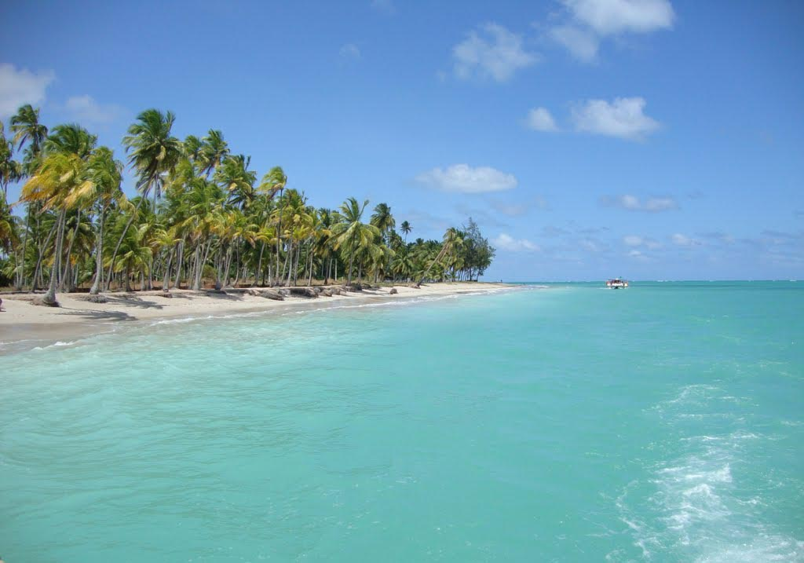
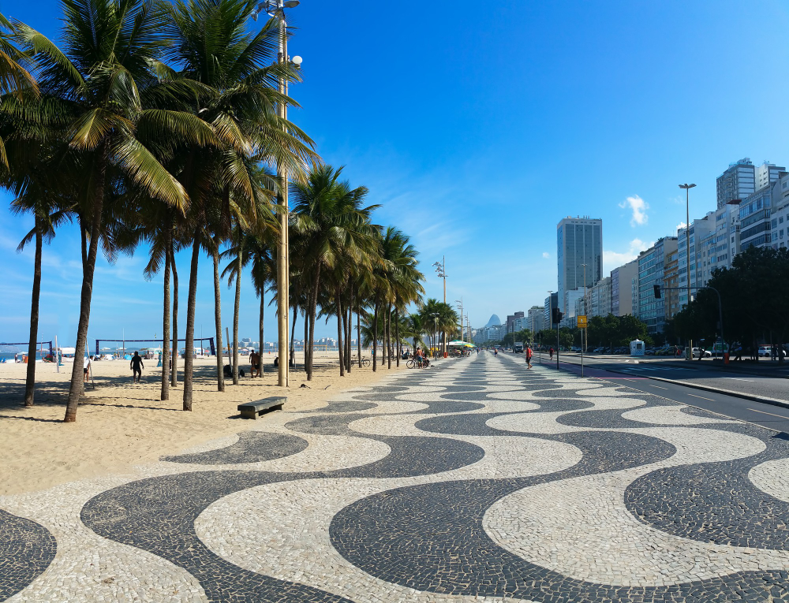

O Brasil é um dos países tropicais conhecidos pelas praias mais bonitas do planeta. Confira as melhores praias para esse verão.
Jericoacoara
Jericoacoara é uma praia localizada na vila homônima, no município de Jijoca de Jericoacoara, no estado do Ceará, no Brasil. Está localizada a 295 km a oeste da capital do estado, Fortaleza. Foi eleita em 1994 pelo jornal estadunidense The Washington Post uma das dez praias mais bonitas do planeta.Em 2014, foi eleita pelo Huffington Post a quarta melhor praia da Terra.É um dos locais mais frequentados por praticantes de windsurfe no país. A praia é parte integrante do Parque Nacional de Jericoacoara.
Atrações:
Pedra Furada.
Duna do Pôr do Sol.
Igreja Nossa Senhora da Consolação.
Serrote.
Farol de Jericoacoara.
Campo das Dunas.
Praia do Sancho

Baía do Sancho é uma baía de águas claras localizada a oeste do Morro Dois Irmãos e a leste da Baía dos Golfinhos, no arquipélago de Fernando de Noronha, no estado de Pernambuco, Brasil. O local abriga uma praia de mesmo nome. Na porção central da baía são encontradas lajes rochosas que abrigam uma diversificada fauna e flora marinha.
Atrações
Mergulho com Snorkel e Scuba Diving
Observação de Golfinhos
Trilhas e Aventura
Época de Desova de Tartarugas
Praia de Muro Alto

Praia de Muro Alto é uma praia localizada no município de Ipojuca, litoral sul do estado brasileiro de Pernambuco.É conhecida por abrigar um grande complexo de resorts hoteleiros e residenciais que ocupam todo seu litoral. A Praia de Muro Alto tem cerca de 3 km de extensão e é formada por um extenso arrecife que cria uma imensa piscina natural com águas calmas, mornas e transparentes
Atrações:
Passeio de Caiaque e Stand-Up Paddle
Piscinas Naturais
Passeios de Buggy
Muro de Areia e Arrecifes
Praia de Antunes

Um verdadeiro cenário paradisíaco, com uma praia cercada por coqueiros, água morna e uma areia branquinha e macia: essa é a descrição da Praia de Antunes, uma das mais desertas do estado e quase intocada pelo homem.Quem já visitou o local diz que o mar de Antunes é tão azul que, ao longo do horizonte, é possível confundi-lo com o céu. Outra característica marcante de quem viaja à Antunes são as conchas presente na beira do mar, que com o passar do tempo vão sendo trituradas naturalmente e viram pó que se mistura à areia do mar.
Atrações:
Passeio de Lancha e Catamarã
Recifes de Corais
Snorkeling
Visita aos “Galés” de Maragogi
Copacabana

Copacabana é um bairro situado na Zona Sul do município do Rio de Janeiro, no Brasil. É considerado um dos bairros mais famosos e prestigiados do Brasil e um dos mais conhecidos do mundo. Tem o apelido de Princesinha do Mar e Coração da Zona Sul.Copacabana atrai um grande contingente de turistas para seus mais de oitenta hotéis, que ficam especialmente cheios durante as épocas do ano-novo e do carnaval. No fim de ano, a tradicional queima de fogos na Praia de Copacabana atrai uma multidão. A orla ainda é lugar de variados eventos, como shows nacionais e internacionais, durante o resto do ano.
Atrações:
Forte de Copacabana.
Calçadão de Copacabana.
Réveillon em Copacabana
Museu da Imagem e do Som (MIS)
Cuidados no verão
Todos nós queremos curtir as férias de verão da melhor forma possível. Fique ligado e siga as dicas a seguir.
Use protetor solar com fator de proteção adequado (FPS 30 ou mais) e reaplique a cada 2 horas, especialmente após entrar na água. A exposição prolongada ao sol pode causar queimaduras, envelhecimento precoce e aumentar o risco de câncer de pele.
Beba bastante água para manter-se hidratado, já que o calor intenso pode levar à desidratação. Evite consumir apenas bebidas alcoólicas, pois elas podem acelerar a desidratação.
Algumas praias possuem correntes fortes que podem arrastar nadadores para o mar aberto. Fique atento às bandeiras de sinalização e sempre nade em áreas supervisionadas por salva-vidas.
Evite o sol entre 10h e 16h, quando os raios ultravioleta (UV) são mais intensos. Se estiver na praia nesse período, busque sombra e use acessórios de proteção, como chapéus, óculos escuros e roupas leves.
Coma alimentos leves e frescos. Evite comidas de origem duvidosa ou mal conservadas, pois o calor pode acelerar a deterioração e causar intoxicações alimentares.
Esses cuidados garantem maior segurança e conforto durante os dias de praia no verão.
cuidados com crianças
Levar as crianças para a praia no verão é uma ótima maneira de aprovitar o sol e o mar, mais é importante seguir alguns cuidados para garantir a segurança e o bem-estar dos pequenos
No verão, a perda de água corporal é mais intensa do que nas outras estações do ano. As crianças ainda perdem mais água corporal do que os adultos devido ao metabolismo mais rápido e ao maior gasto energético ao brincar. Por conta disso, estimule sempre a hidratação das crianças. Oferecer sucos naturais, água de coco e água saborizada com frutas são boas alternativas para incentivar a hidratação infantil.
No verão é muito comum o aumento de insetos. Além da proteção solar, é recomendado o uso de repelentes, mas somente em crianças acima de 6 meses. Para crianças acima de 6 meses, os repelentes mais indicados são aqueles que protegem contra o Aedes aegypti. Aplique o protetor solar primeiro, e só depois o repelente.
Uma alimentação mais leve e rica em frutas que contêm água, é importante para ajudar na hidratação e no resfriamento do corpo. Também é importante evitar alimentos gordurosos e pesados que atrapalham a digestão, pois o corpo fará um maior esforço na digestão, causando cansaço, sono e tontura.